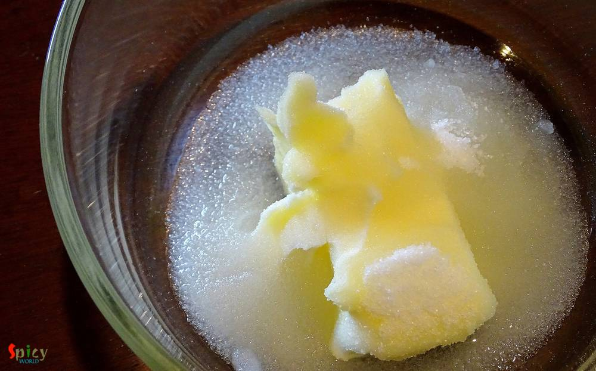
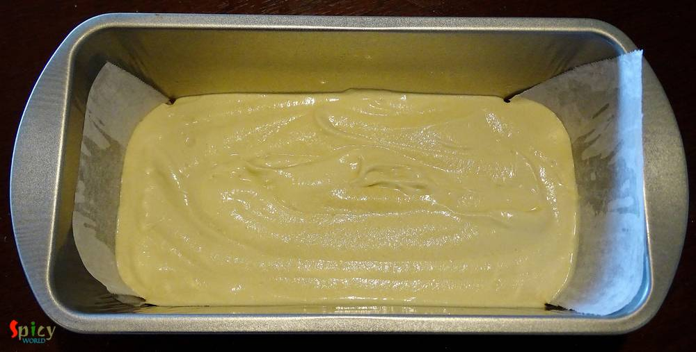
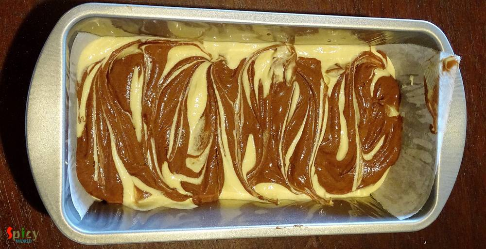

Simple and Easy Recipes
Marble Cake
© 2016 Spicy World, Published on: Feb 25, 2016
This is my third successful cake on first attempt. To make 'marble cake' you will need two flavours. I have used most common two flavours - vanilla and chocolate. You can use any flavours of your choice. The texture of this cake impressed me a lot. Just love to bite those chocolate swirls with vanilla sponge.

Ingredients
- Half cup of all purpose flour.
- 2 Teaspoon of cocoa powder.
- Half Teaspoon of baking powder.
- 1/4th cup of sugar.
- Half stick of butter. (Room temp)
- 4 Tablespoons of oil.
- 3 eggs.
- 1 Tablespoon of vanilla essence.
- Pinch of salt.
- 2 Tablespoons of milk.

Steps
Put the soft butter, oil and sugar in a mixing bowl.

Start beating them for 5 minutes. Everything should be mixed properly.
Then add 3 eggs and vanilla essence to the butter.
Beat well for 6 minutes.
Now add the all purpose flour, baking powder and salt to the egg mixture. Mix well everything.
Then add 2 Tablespoons of milk to the mixture.
Again mix well.
Take a greased pan.
Pour 2/3rd of the batter in the pan.

Then in the remaining batter add cocoa powder. Mix very well.
Put dollops of cocoa batter, maintaing gap, over the vanilla batter with help of a spoon.
Take a butter knife and make 's' / swirl from top to bottom.
Do not mix everything. You just have to make some swirls.

Put the tray in the preheated oven for 40 minutes in 350℉.
After that give some time to cool down, then cut a slice.
Your marble cake is ready ...
Enjoy this with a cup of tea ...
")